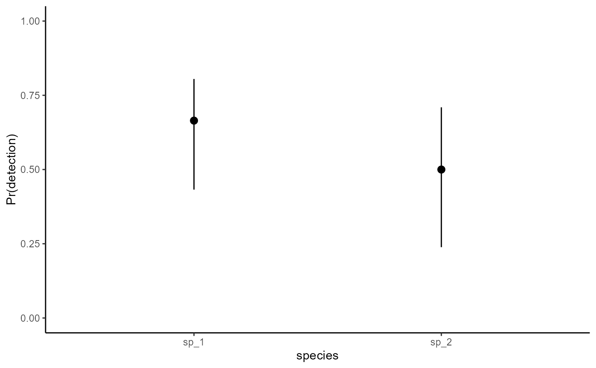

Supported mvgam families
Arguments
- link
a specification for the family link function. At present these cannot be changed
- ...
Arguments to be passed to the mgcv version of the associated functions
Details
mvgam currently supports the following standard observation families:
gaussianwith identity link, for real-valued datapoissonwith log-link, for count dataGammawith log-link, for non-negative real-valued databinomialwith logit-link, for count data when the number of trials is known (and must be supplied)
In addition, the following extended families from the mgcv and brms packages are supported:
betarwith logit-link, for proportional data on(0,1)nbwith log-link, for count datalognormalwith identity-link, for non-negative real-valued databernoulliwith logit-link, for binary databeta_binomialwith logit-link, as forbinomial()but allows for overdispersion
Finally, mvgam supports the three extended families described here:
tweediewith log-link, for count data (power parameterpfixed at1.5)student_t()(orstudent) with identity-link, for real-valued datanmixfor count data with imperfect detection modeled via a State-Space N-Mixture model. The latent states are Poisson (with log link), capturing the 'true' latent abundance, while the observation process is Binomial to account for imperfect detection. The observationformulain these models is used to set up a linear predictor for the detection probability (with logit link). See the example below for a more detailed worked explanation of thenmix()family
Only poisson(), nb(), and tweedie() are available if
using JAGS. All families, apart from tweedie(), are supported if
using Stan.
Note that currently it is not possible to change the default link
functions in mvgam, so any call to change these will be silently ignored
Examples
# \donttest{
# Example showing how to set up N-mixture models
set.seed(999)
# Simulate observations for species 1, which shows a declining trend and 0.7 detection probability
data.frame(site = 1,
# five replicates per year; six years
replicate = rep(1:5, 6),
time = sort(rep(1:6, 5)),
species = 'sp_1',
# true abundance declines nonlinearly
truth = c(rep(28, 5),
rep(26, 5),
rep(23, 5),
rep(16, 5),
rep(14, 5),
rep(14, 5)),
# observations are taken with detection prob = 0.7
obs = c(rbinom(5, 28, 0.7),
rbinom(5, 26, 0.7),
rbinom(5, 23, 0.7),
rbinom(5, 15, 0.7),
rbinom(5, 14, 0.7),
rbinom(5, 14, 0.7))) %>%
# add 'series' information, which is an identifier of site, replicate and species
dplyr::mutate(series = paste0('site_', site,
'_', species,
'_rep_', replicate),
time = as.numeric(time),
# add a 'cap' variable that defines the maximum latent N to
# marginalize over when estimating latent abundance; in other words
# how large do we realistically think the true abundance could be?
cap = 80) %>%
dplyr::select(- replicate) -> testdat
# Now add another species that has a different temporal trend and a smaller
# detection probability (0.45 for this species)
testdat = testdat %>%
dplyr::bind_rows(data.frame(site = 1,
replicate = rep(1:5, 6),
time = sort(rep(1:6, 5)),
species = 'sp_2',
truth = c(rep(4, 5),
rep(7, 5),
rep(15, 5),
rep(16, 5),
rep(19, 5),
rep(18, 5)),
obs = c(rbinom(5, 4, 0.45),
rbinom(5, 7, 0.45),
rbinom(5, 15, 0.45),
rbinom(5, 16, 0.45),
rbinom(5, 19, 0.45),
rbinom(5, 18, 0.45))) %>%
dplyr::mutate(series = paste0('site_', site,
'_', species,
'_rep_', replicate),
time = as.numeric(time),
cap = 50) %>%
dplyr::select(-replicate))
# series identifiers
testdat$species <- factor(testdat$species,
levels = unique(testdat$species))
testdat$series <- factor(testdat$series,
levels = unique(testdat$series))
# The trend_map to state how replicates are structured
testdat %>%
# each unique combination of site*species is a separate process
dplyr::mutate(trend = as.numeric(factor(paste0(site, species)))) %>%
dplyr::select(trend, series) %>%
dplyr::distinct() -> trend_map
trend_map
#> trend series
#> 1 1 site_1_sp_1_rep_1
#> 2 1 site_1_sp_1_rep_2
#> 3 1 site_1_sp_1_rep_3
#> 4 1 site_1_sp_1_rep_4
#> 5 1 site_1_sp_1_rep_5
#> 6 2 site_1_sp_2_rep_1
#> 7 2 site_1_sp_2_rep_2
#> 8 2 site_1_sp_2_rep_3
#> 9 2 site_1_sp_2_rep_4
#> 10 2 site_1_sp_2_rep_5
# Fit a model
mod <- mvgam(
# the observation formula sets up linear predictors for
# detection probability on the logit scale
formula = obs ~ species - 1,
# the trend_formula sets up the linear predictors for
# the latent abundance processes on the log scale
trend_formula = ~ s(time, by = trend, k = 4) + species,
# the trend_map takes care of the mapping
trend_map = trend_map,
# nmix() family and data
family = nmix(),
data = testdat,
# priors can be set in the usual way
priors = c(prior(std_normal(), class = b),
prior(normal(1, 1.5), class = Intercept_trend)),
chains = 2)
#> Your model may benefit from using "noncentred = TRUE"
#> Compiling Stan program using cmdstanr
#>
#> In file included from stan/lib/stan_math/stan/math/prim/prob/von_mises_lccdf.hpp:5,
#> from stan/lib/stan_math/stan/math/prim/prob/von_mises_ccdf_log.hpp:4,
#> from stan/lib/stan_math/stan/math/prim/prob.hpp:359,
#> from stan/lib/stan_math/stan/math/prim.hpp:16,
#> from stan/lib/stan_math/stan/math/rev.hpp:16,
#> from stan/lib/stan_math/stan/math.hpp:19,
#> from stan/src/stan/model/model_header.hpp:4,
#> from C:/Users/uqnclar2/AppData/Local/Temp/RtmpU5rG2n/model-3fc06f996d18.hpp:2:
#> stan/lib/stan_math/stan/math/prim/prob/von_mises_cdf.hpp: In function 'stan::return_type_t<T_x, T_sigma, T_l> stan::math::von_mises_cdf(const T_x&, const T_mu&, const T_k&)':
#> stan/lib/stan_math/stan/math/prim/prob/von_mises_cdf.hpp:194: note: '-Wmisleading-indentation' is disabled from this point onwards, since column-tracking was disabled due to the size of the code/headers
#> 194 | if (cdf_n < 0.0)
#> |
#> stan/lib/stan_math/stan/math/prim/prob/von_mises_cdf.hpp:194: note: adding '-flarge-source-files' will allow for more column-tracking support, at the expense of compilation time and memory
#> Start sampling
#> Running MCMC with 2 parallel chains...
#>
#> Chain 1 Iteration: 1 / 1000 [ 0%] (Warmup)
#> Chain 2 Iteration: 1 / 1000 [ 0%] (Warmup)
#> Chain 2 Iteration: 100 / 1000 [ 10%] (Warmup)
#> Chain 1 Iteration: 100 / 1000 [ 10%] (Warmup)
#> Chain 2 Iteration: 200 / 1000 [ 20%] (Warmup)
#> Chain 1 Iteration: 200 / 1000 [ 20%] (Warmup)
#> Chain 2 Iteration: 300 / 1000 [ 30%] (Warmup)
#> Chain 1 Iteration: 300 / 1000 [ 30%] (Warmup)
#> Chain 2 Iteration: 400 / 1000 [ 40%] (Warmup)
#> Chain 1 Iteration: 400 / 1000 [ 40%] (Warmup)
#> Chain 2 Iteration: 500 / 1000 [ 50%] (Warmup)
#> Chain 2 Iteration: 501 / 1000 [ 50%] (Sampling)
#> Chain 1 Iteration: 500 / 1000 [ 50%] (Warmup)
#> Chain 1 Iteration: 501 / 1000 [ 50%] (Sampling)
#> Chain 2 Iteration: 600 / 1000 [ 60%] (Sampling)
#> Chain 1 Iteration: 600 / 1000 [ 60%] (Sampling)
#> Chain 2 Iteration: 700 / 1000 [ 70%] (Sampling)
#> Chain 1 Iteration: 700 / 1000 [ 70%] (Sampling)
#> Chain 2 Iteration: 800 / 1000 [ 80%] (Sampling)
#> Chain 1 Iteration: 800 / 1000 [ 80%] (Sampling)
#> Chain 2 Iteration: 900 / 1000 [ 90%] (Sampling)
#> Chain 1 Iteration: 900 / 1000 [ 90%] (Sampling)
#> Chain 2 Iteration: 1000 / 1000 [100%] (Sampling)
#> Chain 2 finished in 10.6 seconds.
#> Chain 1 Iteration: 1000 / 1000 [100%] (Sampling)
#> Chain 1 finished in 11.2 seconds.
#>
#> Both chains finished successfully.
#> Mean chain execution time: 10.9 seconds.
#> Total execution time: 11.3 seconds.
#>
# The usual diagnostics
summary(mod)
#> GAM observation formula:
#> obs ~ species - 1
#> <environment: 0x000001aded98dc28>
#>
#> GAM process formula:
#> ~s(time, by = trend, k = 4) + species
#> <environment: 0x000001aded98dc28>
#>
#> Family:
#> nmix
#>
#> Link function:
#> log
#>
#> Trend model:
#> None
#>
#> N process models:
#> 2
#>
#> N series:
#> 10
#>
#> N timepoints:
#> 6
#>
#> Status:
#> Fitted using Stan
#> 2 chains, each with iter = 1000; warmup = 500; thin = 1
#> Total post-warmup draws = 1000
#>
#>
#> GAM observation model coefficient (beta) estimates:
#> 2.5% 50% 97.5% Rhat n_eff
#> speciessp_1 -0.27 0.68000 1.40 1 376
#> speciessp_2 -1.20 -0.00015 0.89 1 503
#>
#> GAM process model coefficient (beta) estimates:
#> 2.5% 50% 97.5% Rhat n_eff
#> (Intercept)_trend 2.700 3.00000 3.400 1.00 359
#> speciessp_2_trend -1.200 -0.62000 0.170 1.00 357
#> s(time):trendtrend1.1_trend -0.074 0.01600 0.200 1.00 276
#> s(time):trendtrend1.2_trend -0.280 -0.00085 0.270 1.00 341
#> s(time):trendtrend1.3_trend -0.460 -0.25000 -0.050 1.00 412
#> s(time):trendtrend2.1_trend -0.300 -0.01600 0.082 1.01 105
#> s(time):trendtrend2.2_trend -0.190 0.03500 0.610 1.01 140
#> s(time):trendtrend2.3_trend 0.043 0.32000 0.620 1.00 499
#>
#> Approximate significance of GAM process smooths:
#> edf Ref.df Chi.sq p-value
#> s(time):seriestrend1 0.964 3 3.59 0.64
#> s(time):seriestrend2 0.966 3 4.08 0.81
#>
#> Stan MCMC diagnostics:
#> n_eff / iter looks reasonable for all parameters
#> Rhat looks reasonable for all parameters
#> 0 of 1000 iterations ended with a divergence (0%)
#> 0 of 1000 iterations saturated the maximum tree depth of 12 (0%)
#> E-FMI indicated no pathological behavior
#>
#> Samples were drawn using NUTS(diag_e) at Mon Jul 01 8:45:13 AM 2024.
#> For each parameter, n_eff is a crude measure of effective sample size,
#> and Rhat is the potential scale reduction factor on split MCMC chains
#> (at convergence, Rhat = 1)
# Plotting conditional effects
library(ggplot2); library(marginaleffects)
#> Warning: package ‘ggplot2’ was built under R version 4.3.3
#> RStudio Community is a great place to get help:
#> https://community.rstudio.com/c/tidyverse
plot_predictions(mod, condition = 'species',
type = 'detection') +
ylab('Pr(detection)') +
ylim(c(0, 1)) +
theme_classic() +
theme(legend.position = 'none')

# Example showcasing how cbind() is needed for Binomial observations
# Simulate two time series of Binomial trials
trials <- sample(c(20:25), 50, replace = TRUE)
x <- rnorm(50)
detprob1 <- plogis(-0.5 + 0.9*x)
detprob2 <- plogis(-0.1 -0.7*x)
dat <- rbind(data.frame(y = rbinom(n = 50, size = trials, prob = detprob1),
time = 1:50,
series = 'series1',
x = x,
ntrials = trials),
data.frame(y = rbinom(n = 50, size = trials, prob = detprob2),
time = 1:50,
series = 'series2',
x = x,
ntrials = trials))
dat <- dplyr::mutate(dat, series = as.factor(series))
dat <- dplyr::arrange(dat, time, series)
# Fit a model using the binomial() family; must specify observations
# and number of trials in the cbind() wrapper
mod <- mvgam(cbind(y, ntrials) ~ series + s(x, by = series),
family = binomial(),
data = dat)
#> Compiling Stan program using cmdstanr
#>
#> Start sampling
#> Running MCMC with 4 parallel chains...
#>
#> Chain 1 Iteration: 1 / 1000 [ 0%] (Warmup)
#> Chain 2 Iteration: 1 / 1000 [ 0%] (Warmup)
#> Chain 3 Iteration: 1 / 1000 [ 0%] (Warmup)
#> Chain 4 Iteration: 1 / 1000 [ 0%] (Warmup)
#> Chain 1 Iteration: 100 / 1000 [ 10%] (Warmup)
#> Chain 1 Iteration: 200 / 1000 [ 20%] (Warmup)
#> Chain 3 Iteration: 100 / 1000 [ 10%] (Warmup)
#> Chain 4 Iteration: 100 / 1000 [ 10%] (Warmup)
#> Chain 1 Iteration: 300 / 1000 [ 30%] (Warmup)
#> Chain 2 Iteration: 100 / 1000 [ 10%] (Warmup)
#> Chain 3 Iteration: 200 / 1000 [ 20%] (Warmup)
#> Chain 4 Iteration: 200 / 1000 [ 20%] (Warmup)
#> Chain 1 Iteration: 400 / 1000 [ 40%] (Warmup)
#> Chain 1 Iteration: 500 / 1000 [ 50%] (Warmup)
#> Chain 1 Iteration: 501 / 1000 [ 50%] (Sampling)
#> Chain 2 Iteration: 200 / 1000 [ 20%] (Warmup)
#> Chain 2 Iteration: 300 / 1000 [ 30%] (Warmup)
#> Chain 3 Iteration: 300 / 1000 [ 30%] (Warmup)
#> Chain 4 Iteration: 300 / 1000 [ 30%] (Warmup)
#> Chain 1 Iteration: 600 / 1000 [ 60%] (Sampling)
#> Chain 2 Iteration: 400 / 1000 [ 40%] (Warmup)
#> Chain 4 Iteration: 400 / 1000 [ 40%] (Warmup)
#> Chain 4 Iteration: 500 / 1000 [ 50%] (Warmup)
#> Chain 4 Iteration: 501 / 1000 [ 50%] (Sampling)
#> Chain 1 Iteration: 700 / 1000 [ 70%] (Sampling)
#> Chain 1 Iteration: 800 / 1000 [ 80%] (Sampling)
#> Chain 2 Iteration: 500 / 1000 [ 50%] (Warmup)
#> Chain 3 Iteration: 400 / 1000 [ 40%] (Warmup)
#> Chain 4 Iteration: 600 / 1000 [ 60%] (Sampling)
#> Chain 1 Iteration: 900 / 1000 [ 90%] (Sampling)
#> Chain 2 Iteration: 501 / 1000 [ 50%] (Sampling)
#> Chain 2 Iteration: 600 / 1000 [ 60%] (Sampling)
#> Chain 3 Iteration: 500 / 1000 [ 50%] (Warmup)
#> Chain 3 Iteration: 501 / 1000 [ 50%] (Sampling)
#> Chain 4 Iteration: 700 / 1000 [ 70%] (Sampling)
#> Chain 1 Iteration: 1000 / 1000 [100%] (Sampling)
#> Chain 2 Iteration: 700 / 1000 [ 70%] (Sampling)
#> Chain 3 Iteration: 600 / 1000 [ 60%] (Sampling)
#> Chain 3 Iteration: 700 / 1000 [ 70%] (Sampling)
#> Chain 4 Iteration: 800 / 1000 [ 80%] (Sampling)
#> Chain 1 finished in 0.9 seconds.
#> Chain 2 Iteration: 800 / 1000 [ 80%] (Sampling)
#> Chain 3 Iteration: 800 / 1000 [ 80%] (Sampling)
#> Chain 4 Iteration: 900 / 1000 [ 90%] (Sampling)
#> Chain 2 Iteration: 900 / 1000 [ 90%] (Sampling)
#> Chain 3 Iteration: 900 / 1000 [ 90%] (Sampling)
#> Chain 4 Iteration: 1000 / 1000 [100%] (Sampling)
#> Chain 4 finished in 1.2 seconds.
#> Chain 2 Iteration: 1000 / 1000 [100%] (Sampling)
#> Chain 3 Iteration: 1000 / 1000 [100%] (Sampling)
#> Chain 2 finished in 1.3 seconds.
#> Chain 3 finished in 1.3 seconds.
#>
#> All 4 chains finished successfully.
#> Mean chain execution time: 1.2 seconds.
#> Total execution time: 1.4 seconds.
#>
summary(mod)
#> GAM formula:
#> cbind(y, ntrials) ~ series + s(x, by = series)
#> <environment: 0x000001aded98dc28>
#>
#> Family:
#> binomial
#>
#> Link function:
#> logit
#>
#> Trend model:
#> None
#>
#> N series:
#> 2
#>
#> N timepoints:
#> 50
#>
#> Status:
#> Fitted using Stan
#> 4 chains, each with iter = 1000; warmup = 500; thin = 1
#> Total post-warmup draws = 2000
#>
#>
#> GAM coefficient (beta) estimates:
#> 2.5% 50% 97.5% Rhat n_eff
#> (Intercept) -0.550 -0.41000 -0.270 1.01 833
#> seriesseries2 -0.170 0.03000 0.220 1.00 1020
#> s(x):seriesseries1.1 -0.200 0.00089 0.200 1.00 504
#> s(x):seriesseries1.2 -0.280 0.00670 0.320 1.00 475
#> s(x):seriesseries1.3 -0.150 -0.00370 0.068 1.00 317
#> s(x):seriesseries1.4 -0.160 0.00140 0.160 1.00 461
#> s(x):seriesseries1.5 -0.045 0.00053 0.057 1.00 562
#> s(x):seriesseries1.6 -0.140 0.00210 0.150 1.00 423
#> s(x):seriesseries1.7 -0.031 -0.00050 0.024 1.01 433
#> s(x):seriesseries1.8 -0.670 -0.00710 0.650 1.00 457
#> s(x):seriesseries1.9 0.830 1.20000 1.500 1.01 378
#> s(x):seriesseries2.1 -0.120 0.04300 0.630 1.02 128
#> s(x):seriesseries2.2 -0.250 0.01900 0.680 1.01 158
#> s(x):seriesseries2.3 -0.081 0.00290 0.190 1.01 261
#> s(x):seriesseries2.4 -0.200 -0.00035 0.250 1.01 285
#> s(x):seriesseries2.5 -0.140 -0.00390 0.040 1.01 208
#> s(x):seriesseries2.6 -0.130 0.00300 0.280 1.01 176
#> s(x):seriesseries2.7 -0.037 0.00032 0.058 1.00 669
#> s(x):seriesseries2.8 -1.200 -0.00260 0.630 1.01 188
#> s(x):seriesseries2.9 -1.200 -0.96000 -0.140 1.02 146
#>
#> Approximate significance of GAM smooths:
#> edf Ref.df Chi.sq p-value
#> s(x):seriesseries1 1.10 9 70.4 0.0016 **
#> s(x):seriesseries2 2.45 9 60.7 <2e-16 ***
#> ---
#> Signif. codes: 0 ‘***’ 0.001 ‘**’ 0.01 ‘*’ 0.05 ‘.’ 0.1 ‘ ’ 1
#>
#> Stan MCMC diagnostics:
#> n_eff / iter looks reasonable for all parameters
#> Rhat looks reasonable for all parameters
#> 0 of 2000 iterations ended with a divergence (0%)
#> 0 of 2000 iterations saturated the maximum tree depth of 12 (0%)
#> E-FMI indicated no pathological behavior
#>
#> Samples were drawn using NUTS(diag_e) at Mon Jul 01 8:45:35 AM 2024.
#> For each parameter, n_eff is a crude measure of effective sample size,
#> and Rhat is the potential scale reduction factor on split MCMC chains
#> (at convergence, Rhat = 1)
# }